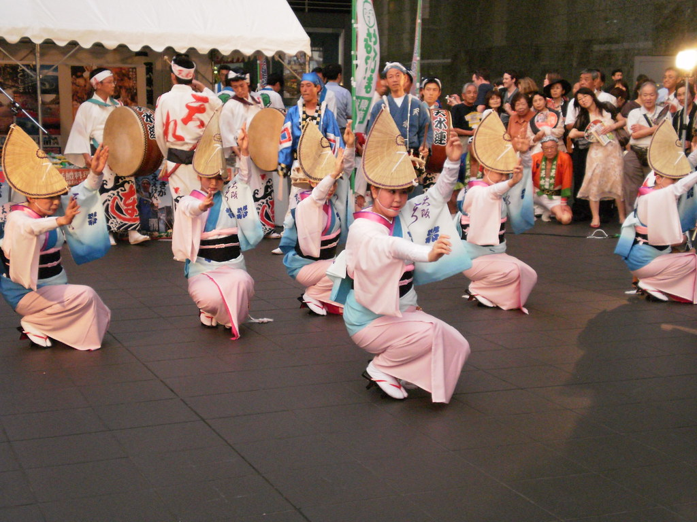

Música, Sons e Danças
A música tem o poder de nos levar de volta no tempo em poucos segundos. Um som, uma melodia ou um ritmo podem despertar lembranças de pessoas queridas, festas, encontros e momentos especiais da vida.

Os sons do cotidiano, as canções da juventude e as danças tradicionais fazem parte da nossa história. Eles conectam gerações, fortalecem vínculos e mantêm viva a cultura. Nesta seção, convidamos você a ouvir com o coração, lembrar com carinho e sentir novamente as emoções que marcaram sua trajetória. Porque muitas vezes, uma música não é apenas uma canção, é uma memória que continua viva dentro de nós.
Taiko — Tambores Japoneses